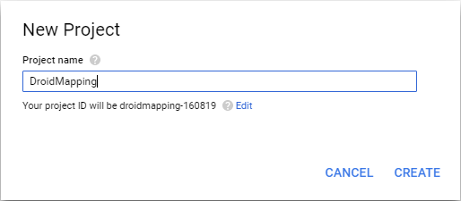

Duration
15 minutes
Lab goals
In this exercise, you will register for a Maps API key with Google, which you need in order to use the Google Maps functionality in Android. You will then modify your Android application and add the key into the app.
To complete this exercise, you will perform the following steps:
- Create a project in the Google APIs console.
- Obtain the API key.
- Set all the Google API key information into the DroidMapping application.
- Add the required Android manifest flags and runtime permissions requests.
Required Assets
There is a Exercise 2 folder included with this lab exercise which contains a completed project to compare your work against.
Steps
This is a group exercise, intended to be done in a live class, if you are working through this on your own, you can use the step-by-step instructions below. You can also utilize the high-level goals defined above to work through the code, relying on the below instructions to fill in any necessary details.
Creating an API Project
The first thing we need to do is create a new project in the Google APIs console or add the Google Maps Android API service to an existing project. This will enable our application to use the services provided by Google Maps.
- In the browser, navigate to the Google API Console. You must either create a new project or select an existing project you already have defined in the Google console. The instructions below will assume you are creating a new project.
-
Name your new project "DroidMapping". This name will need to be unique to your Google API Console; it will be assigned an ID to make the project unique across all API developers as you can see in the screenshot below.
The Google API project name is not the same as your application name or package identifier; this is a name used to identify the project to Google and is not exposed to the user. You can even reuse the same Google API project across your Android apps - multiple SHA1 keys can be associated to a single API registration.
- Once the project is created (or selected), click on the Library tab in the left navigation bar. A searchable list of all Google API services available to a project will display.
- Either locate the Google Maps section and select Google Maps Android API or search for "Google Maps Android API" in the API search box (not the "Google Places API for Android").
- Enable this service for this project with the button at the top.
- Once you turn the service on, it might display the terms of service. If it does, accept them and dismiss the dialog.
At this point the API project has been created and Google Maps Android API has been added to it. Next, we will look at how to create an API key and authorize a Xamarin.Android application so that it is able to use this feature.
Obtaining the API Key
Once the Console API project has been created, it is necessary to create an Android API key. Android applications require the API key before they are granted access to Android Map API. Without this, the map display will be empty.
- In the Google API Manager, click on the Credentials link in the sidebar. In the presented screen, use the Create Credentials > API key button to start creating the key.
- In the "API key created" popup, click RESTRICT KEY.
- Next, we need to authorize an application to use this API key. In the next screen, enter a name for the key; multiple apps can share a key, so use a name that represents the access and services you are authorizing with this key.
- Still within the new key's Credentials screen, choose the "Android apps" option under Key restriction.
- Next, click the "+" button to add the package name and fingerprint. In the shown boxes, enter the package name of your application. Since we've not set the application settings yet, use com.xamarin.droidmapping as the package name. (You can also pick your own package name, just make sure you set the same package name in the app!) Now, enter the SHA1 fingerprint you got in the last exercise.
- Click the Save button, which will return you to the Credentials screen that displays the API key.
Modify the Android application settings
Next, we need to modify our mapping application and set all the proper pieces in place to use Google Maps.
- Open the DroidMapping project's properties from the Solution pad, and select the Android Manifest tab. (You can also edit the Properties > AndroidManifest.xml file directly.)
- Set the package name to com.xamarin.droidmapping. Remember, it must match the registered package name you used when creating the API key.
- Set the minimum Android version to 4.4 and the latest specific Target Android version. (For now, avoid the "Use Compile using SDK version" option and pick the newest named option.)
-
Next, add the required Android permissions we talked about in the class. Recall that you will need the following permissions:
- INTERNET
- ACCESS_NETWORK_STATE
- ACCESS_COURSE_LOCATION (optional, but add it anyway for device location use)
- ACCESS_FINE_LOCATION (optional, but add it anyway for device location use)
Ask for permissions at runtime
We also need to ask the user at runtime for these permissions. Most of the implementation has been provided, but we will need to call the provided methods from our app.
- Add the Assets > MappingPermissionsHelper.cs C# class to the project from your copy of the cloned or downloaded course materials.
- In the Solution Explorer, open MainActivity.cs.
- At the top of the class, add a
MappingPermissionsHelperfield namedpermissionsHelper. - Add an additional
Task<bool> getLocationPermissionsAsyncclass field that we will use to know when the user has granted us permission. (You will need to add a using statement for theTasktype.) - Inside the
OnCreatemethod, assign a new instance ofMappingPermissionsHelperto that new field, passing the constructor the current activity. - Since our app requires all its permissions, we will ask for those permissions immediately. Add a call to the
CheckAndRequestPermissionsmethod of our helper, assigning the returning task to ourgetLocationPermissionsAsyncfield—this will allow us to await the asynchronous permissions request when we need it later. - With the runtime permissions system, we will need to handle the callback Android makes to our app as well. Add an override to the activity's
OnRequestPermissionsResultmethod. (You will need to add a using statement for thePermissiontype.) - Within your new
OnRequestPermissionsResultoverride, call the base implementation and then call theOnRequestPermissionsResultof our helper to handle the result in the provided class.
Add Google Maps API requirements
Next, let's add the API key into the application.
-
This is a piece of metadata which can either be added into the AndroidManifest.xml by editing it in source view, or in code through an assembly-level
MetaDataAttribute. This latter approach is what we will use because it allows us to change the value depending on the release or debug build. - Add a new C# source file to the project named GoogleMapsKey.cs.
- Add the following code to the file, replacing any existing template code.
- Replace the placeholder strings with your API key values from the Google API console.
using Android.App;
#if RELEASE
[assembly: MetaDataAttribute("com.google.android.geo.API_KEY", Value="release_key_goes_here")]
#else
[assembly: MetaDataAttribute("com.google.android.geo.API_KEY", Value="debug_key_goes_here")]
#endif
Add the Google Play Services Package
In this final step, we will add the Google Play Services package from NuGet. This will give our application access to the Google Maps Android API by providing the bindings to the APK you installed earlier in the SDK Manager.
- Right-click on the DroidMapping project in the solution and select Add > Add NuGet Packages, or in Visual Studio you can right-click on the References folder and select Manage NuGet Packages....
- Search for "Xamarin.GooglePlayServices.Maps" and add the package to your project.
- It will add several dependency packages to your project which are required by Google Play Services, including common base libraries and support libraries.
- Build and run the application to make sure it compiles and executes - you won't see any information yet.

java.lang.OutOfMemoryError: Java heap space error, then the package generator is likely running out of memory. You can fix this by editing the JavaMaximumHeapSize value of the project file. Inside the project properties, we can increase this value. On Windows, navigate to Android Options > Advanced and set Java Max Heap Size to 1G. On macOS, navigate to Build > Android Build > Advanced and set Java heap size to 1G.
Summary
Congratulations! In this lab exercise, you added Google Play Services component to your project, acquired and specified the Google Maps Android API, added required permissions to the AndroidManifest.xml and generated and added the API key to your maps application.